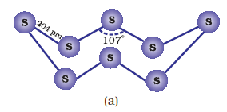
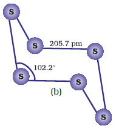

7.14 Sulphur — Allotropic Forms
Sulphur forms numerous allotropes of which the yellow rhombic (α-sulphur) and monoclinic (β -sulphur) forms are the most important. The stable form at room temperature is rhombic sulphur, which transforms to monoclinic sulphur when heated above 369 K.
Rhombic sulphur (α--sulphur)
This allotrope is yellow in colour, m.p. 385.8 K and specific gravity 2.06. Rhombic sulphur crystals are formed on evaporating the solution of roll sulphur in Cs2. It is insoluble in water but dissolves to some extent in benzene, alcohol and ether. It is readily soluble in Cs2.
Monoclinic sulphur (β-sulphur)
Its m.p. is 393 K and specific gravity 1.98. It is soluble in Cs2. This form of sulphur is prepared by melting rhombic sulphur in a dish and cooling, till crust is formed. Two holes are made in the crust and the remaining liquid poured out. On removing the crust, colourless needle shaped crystals of β-sulphur are formed. It is stable above 369 K and transforms into α-sulphur below it. Conversely, α-sulphur is stable below 369 K and transforms into β-sulphur above this. At 369 K both the forms are stable. This temperature is called transition temperature.
Both rhombic and monoclinic sulphur have S8 molecules. These S8 molecules are packed to give different crystal structures. The S8 ring in both the forms is puckered and has a crown shape. The molecular dimensions are given in Fig. 7.5(a).
Several other modifications of sulphur containing 6-20 sulphur atoms per ring have been synthesised in the last two decades. In cyclo-S6, the ring adopts the chair form and the molecular dimensions are as shown in Fig. 7.5 (b). At elevated temperatures (~1000 K), s2 is the dominant species and is paramagnetic like O2.

Fig. 7.5: The structures of (a) S8 ring in rhombic sulphur and (b) S6 form
Example 7.12
Which form of sulphur shows paramagnetic behaviour ?
Solution
In vapour state sulphur partly exists as s2 molecule which has two unpaired electrons in the antibonding p * orbitals like O2 and, hence, exhibits paramagnetism.